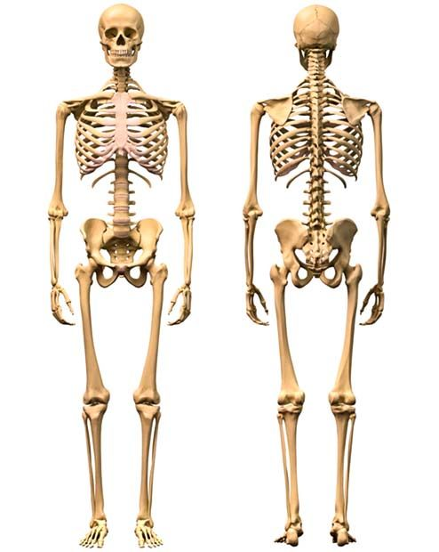
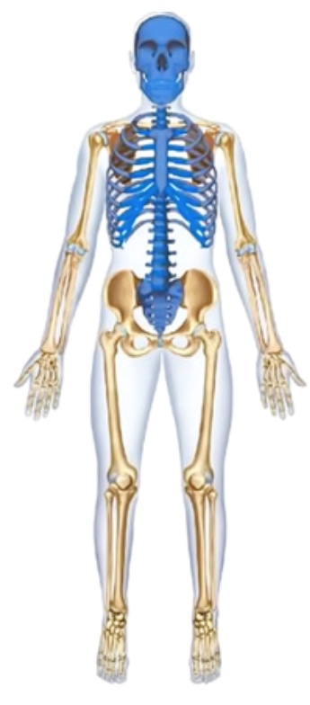
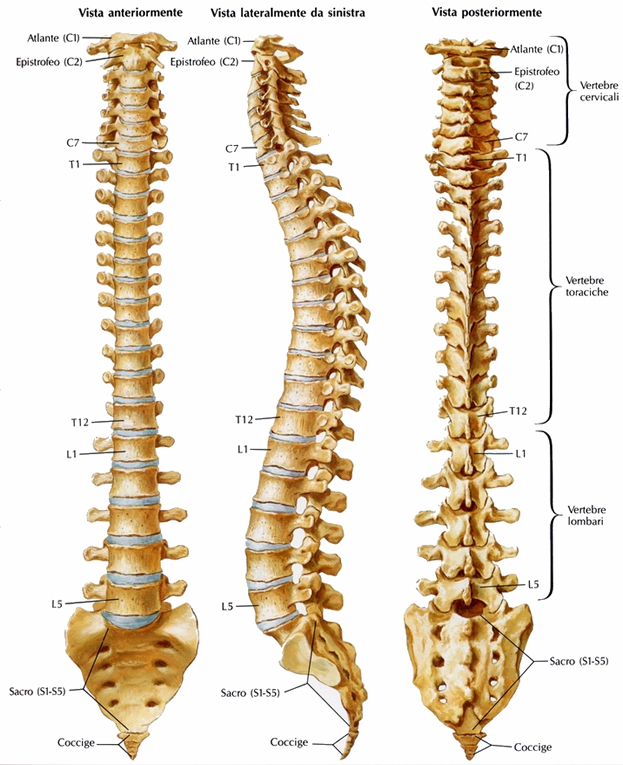
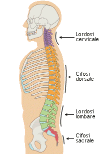
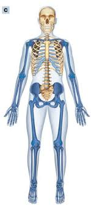
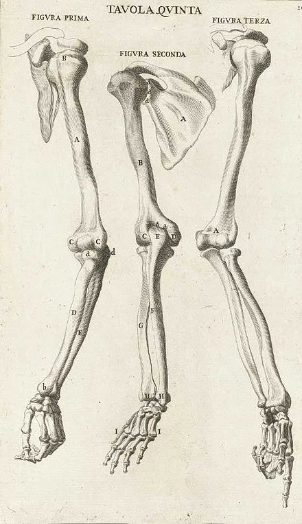
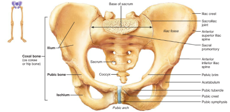
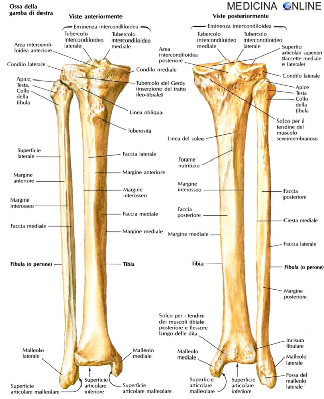
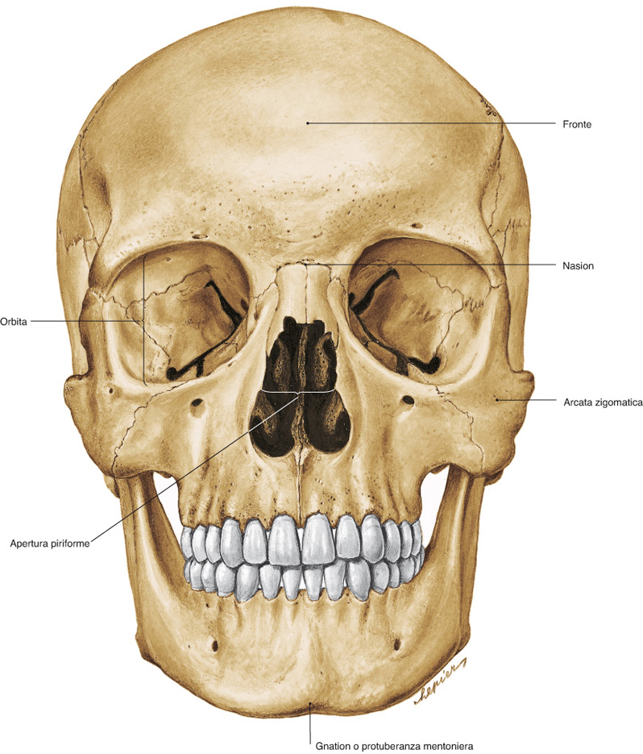

IL SISTEMA LINFATICO, L'IMMUNITÁ
Il Corpo umano è formato da 206 ossa in totale e può essere suddiviso in 3 parti:
- Scheletro assile, ovvero scheletro del tronco formato dalla colonna vertebrale e le costole.
- Scheletro appendicolare, ovvero lo scheletro degli arti e dei cinti, quindi delle strutture ossee che ancorano gli arti, braccia e gambe allo scheletro del tronco.
- Cranio, ovvero lo scheletro della testa, il rivestimento compatto di ossa che protegge al suo interno il cervello.


SCHELETRO ASSILE
La componente principale è data dalla colonna vertebrale. La colonna vertebrale come vediamo è formata da un certo numero nell'uomo di ossa corte, quest'ultime si chiamano vertebre. Ciascuna vertebra somiglia a un cilindretto corto e tozzo, ma le sue pareti sono lisce, infatti ogni vertebra presenta delle sporgenze, delle cavità per articolarsi in maniera semimobile con le arte vertebre e le altre ossa del tronco. Le vertebre non sono a sezione piena ma almeno le più anteriori, quindi quelle della zona del collo e del torace sono forate al centro. I vari fori vertebrali impilati uno sull'altro formano un lungo canale che alloggia al suo interno il midollo spinale, ovvero l'importante prolungamento posteriore del cervello che assicura la motilità degli arti. Trattandosi di una struttura delicata, trova alloggio all'interno delle cavità delle vertebre anteriori. Le vertebre posteriori, ovvero quelle della regione più bassa della colonna vertebrale al contrario non sono forate, ma saldate tra di loro alle ossa del bacino. Tra una vertebra e un'altra si trovano dei dischi di cartilagine i quali facilitano i movimenti di curvatura della colonna, assicurandone la necessaria flessibilità.
Il fatto che la colonna vertebrale non sia formata da un pezzo unico, ma da più ossa corte e articolate, assicura oltre alla possibilità di muoverla (entro certi limiti), anche la presenza di curve naturali.
LA COLONNA VERTEBRALE
La colonna vertebrale è suddivisa in 4 zone:
Iniziamo da quella più anteriore, chiamata cervicale, che si trova nel collo ed è formata da 7 vertebre. É importante ricordare questo numero perchè è costante in tutti i mammiferi, dalla giraffa che avrà quindi nel collo 7 vertebre di forma allungata ad un cetaceo, che avendo forma corporea simile a un pesce sarà privo di collo, ma avrà sempre 7 vertebre cervicali in questo caso molto appiattite. La prima vertebra cervicale, il cosiddetto Atlante è una vertebra a forma di anello. Si chiama Atlante come l'antico titano della mitologia greca che sosteneva il mondo, esattamente come questa vertebra sostiene la testa. É a forma di anello e in essa alloggia una sporgenza della 2 vertebra cervicale, in questo modo le prime due vertebre formano un'articolazione particolarmente mobile che consente il movimento avanti e indietro del capo sul collo.

LE DUE ZONE POSTERIORI ALLA COLONNA VERTEBRALE: LA REGIONE LOMBARE E SACRALE
La regione lombare, corrisponde alla zona addominale del nostro corpo, viceversa, la zona sacrale (quella più posteriore) corrisponde alla zona del bacino. Le ossa della regione sacrale sono difficilmente individuabili in quanto sono fuse tra loro con le ossa del bacino. La colonna vertebrale termina poi infine con una appendice terminale priva di qualunque funzionalità.
COGGICE= Questa zona la possiamo considerare come un ricordo dell'evoluzione dell'uomo a partire dagli animali provvisti di coda. La coda successivamente è scomparsa ma è rimasto questo piccolo ricordo scheletrico.

SCHELETRO APPENDICOLARE
Con il termine di scheletro appendicolare si intende lo scheletro delle gambe e delle braccia che sono rispettivamente gli arti anteriori e quelli posteriori e anche lo scheletro delle strutture di ancoraggio, i cosiddetti cinti (pezzi ossei che ancorano le braccia al tronco. Il cosiddetto cinto anteriore o scapolare) e cinture degli arti stessi allo scheletro del tronco.
È formato da ossa articolate in maniera molto mobile e da questo dipende l’elevata mobilità che hanno le braccia rispetto al tronco. Le ossa principali del cinto anteriore scapolare sono le scapole, due ossa piatte che si trovano in una regione della spalla e poi anteriormente vediamo, nella regione del collo due ossa che si formano per ossificazione diretta del derma, anziché in cartilagine e sono le clavicole. Quindi, le scapole e le clavicole articolate in maniera molto mobile con le ossa del tronco formano il cinto anteriore o cinto scapolare.

L'ARTO ANTERIORE, IL BRACCIO
L'arto anteriore, ovvero il braccio è formato da 3 parti. Lo scheletro del braccio e quello della gamba, in grosso modo si corrispondono, mentre invece i due cinti o cinture sono completamente diversi.
L'arto anteriore è formato da una serie di ossa in una disposizione che ritroveremo, con le dovute differenze anche nella gamba.
Il braccio vero è proprio va dalla spalla (quindi articolato con la scapola) al gomito ed è formato da un unico osso lungo, chiamato omero. Ad esso segue una zona intermedia che va dal gomito al polso, il cosiddetto avambraccio. Quindi il vero braccio arriva fino al gomito e dal gomito fino al polso c'è l'avambraccio che però non è formato solo da un unico osso, ma da due ossa lunghe. Seguendo una disposizione, queste due ossa sono una più robusta e un'altra più sottile. Quella più robusta e resistente si chiama radio, mentre quello più sottile e fragile, ma importante perché forma l'articolazione del gomito è chiamato invece ulna. Proseguendo verso il basso, troviamo la mano, che è formata da una serie di ossa che si possono distinguere in 3 zone:
La zona del polso, chiamata CARPO, la zona del palmo della mano, chiamata METACARPO e poi abbiamo le dita formate da ossa piccole chiamate FALANGI. Per l'esattezza, il pollice è formato da 2 falangi, mentre le altre dita da 3.

IL BACINO
Anche il bacino si articola tramite un cinto, che si chiama IL CINTO PELVICO, però questo è formato in maniera completamente diversa rispetto al cinto anteriore o scapolare. Come è formato? Mentre il cinto anteriore è formato da scapole, clavicole, da pezzi ossei articolati in maniere molte mobili, addirittura lassa, di modo che il braccio ha un'ampia libertà di movimento, il cinto pelvico detto anche bacino è formato in maniera opposta rispetto a quello anteriore, perché addirittura è formato da pezzi ossei saldati tra di loro che si chiamano ILEO, ISCHIO E PUBE saldati con le vertebre terminali, le cosiddette vertebre sacrali della colonna vertebrale, tutto questo a formare una struttura ossea , che è una delle più robuste e compatte del nostro scheletro. Perché il bacino o cinto posteriore ha questa forma? Perché noi siamo animali a stazione eretta e di conseguenza tutto il peso del nostro corpo viene scaricato proprio su questa zona dello scheletro che quindi deve risultare irrobustita e compatta, formata da ossa fuse e saldate con le ultime vertebre della colonna vertebrale.

ARTO POSTERIORE, LA GAMBA
Lo scheletro dell'arto posteriore è formato dalle ossa più lunghe che ci sono nel nostro corpo. Lo scheletro della gamba, esattamente come quello del braccio è diviso in 3 parti: Una prima zona formata da un unico osso, una seconda zona formata da 2 ossa (un osso più robusto e uno più sottile) e poi una zona terminale che in questo caso è il piede ed è formato da numerose ossa divise in 3 regione.
Quindi, mentre le 2 cinture o cinti sono completamente diverse, al contrario lo scheletro dell'arto posteriore è fatto da ossa, anche se più lunghe e robuste, ma disposte allo stesso modo di quelle dell'arto inferiore.
Le 3 zone dell'arto posteriore sono la COSCIA che va dal bacino al ginocchio, la GAMBA che va dal ginocchio alla caviglia e il PIEDE.
Questa prima zona è la coscia è formata da un unico osso, chiamato FEMORE, che è l'osso più lungo e possente del nostro scheletro, quindi è di grande importanza, non solo per motivi di stabilità del nostro scheletro, ma nell'adulto è l'unico osso che contiene al suo interno il midollo rosso, dove vengono prodotti i globuli rossi e le altre cellule del sangue. Nelle altre ossa, questo è sostituito dal midollo giallo formato da tessuto adiposo, ovvero grasso.
Scendendo, troviamo la gamba, che va dal ginocchio alla caviglia e anche questa come nel caso dell'avambraccio dell'arto anteriore è formata da due ossa. Quello più robusto e resistente è chiamato tibia, che si articola non direttamente col femore, ma l'articolazione del ginocchio è formato da un osso tondeggiante chiamato rotula. Alla tibia si accompagna un secondo osso, estremamente sottile e fragile e delicato che si chiama FIBULA O PERONE.
Non c'è un'articolazione diretta con il femore, ma grazie alla rotula avviene il movimento.
Il piede, che esattamente come la mano è formato da numerose ossa. Anche in questo caso sono divise in 3 regioni esattamente come nella mano. Queste numerose ossa sono divise in OSSA DEL TARSO, che è la zona della caviglia dove troviamo il calcagno e l'astragalo, poi abbiamo le OSSA DEL METATARSO che corrispondono alla pianta del piede e poi le FALANGI che corrispondono alle dita. Anche in questo caso, il primo dito (alluce) è formato da due dita e le altre dita invece che si chiamano illice trillice pondolo e mellino, l'ultimo dito è l'unico che si può chiamare mignolo, ciascuno è formato da 3 falangi.

IL CRANIO
Il cranio è formato da ossa piatte che sono saldate tra di loro. La parte più esterna che è chiamata VOLTA CRANICA, appunto formata da ossa piatte sono riconoscibili e distinguibili perché le linee di fusione o suture appaiono più scure. Dalla parte anteriore distinguiamo 4 zone: la zona frontale che è quella che vediamo anteriormente, poi di lato abbiamo la zona parietale e temporale e invece quella più posteriore è chiamata la zona OCCIPITALE, della volta cranica dove si vanno ad articolare le prime vertebre cervicali. Ciascuna chiaramente di queste 4 zone è formata da una coppia di ossa, cioè una per lato, poi abbiamo le ossa ORBITARIE che delimitano le cavità dove sono alloggiati gli occhi. Il naso è fatto di cartilagine come le orecchie, troviamo le ossa del palato e l'unica parte mobile del cranio è la mandibola che è formata da un unico osso, chiamato OSSO DENTALE che è articolato con la mascella. Su queste due ossa, sulla mandibola e la mascella articolate mobilmente si vanno ad inserire i denti. I primi vertebrati apparsi sulla terra erano privi di mascelle, successivamente è comparsa questa articolazione tra mascella e mandibola che ha consentito ai vertebrati (uomo compreso) di poter variare il regime alimentare, di poter masticare e può essere considerata una delle innovazioni evolutive che ha assicurato ai vertebrati il grande successo evolutivo che hanno avuto.
